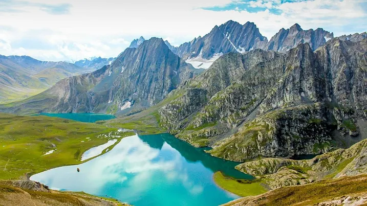

Its time to have some peaceful vibe!!

Our package
- Price : - On Request
- Tour Location : Kashmir
- No Of Days : 4 Night and 5 days
- No Of People : 3+
Day 1
Welcome to Srinagar the City of Lake you will Meet our Representative, Check-in in the reserved Hotel in Srinagar. Then later you will proceed for Local Sightseeing tour of Mughal Gardens – Visit Shankar Acharya Temple CheshmaShahi (Mughal Spring), Nishat Garden known as ‘Garden of pleasure’ built in 16th century (1633) by Mughal King Asif Khan. Overnight stay In Hotel at Srinagar.
Day 2
After Breakfast Leave Hotel & proceed for full day excursion Tour of Pahalgam (7200 fts A.S.L) “Valley of Shepherds” via en route sightseeing visit Awantipura Ruins, Saffron Fields and Cricket Bat Factories, continue drive towards Pahalgam, Pahalgam is the most famous place for Indian Film Industry. Overnight stay in Hotel at Srinagar.
Day 3
After Breakfast leave for Gulmarg “Meadow of Flowers” Discovered by the Kashmir! In winter Gulmarg looks more beautiful due to heavy snowfall. It turns into India’s premier Ski resort in winter. Gulmarg has one of the best ski slopes in the world and highest golf course with 18 holes, enjoy your day by gondola ride, Snow Bike (on your own Expenses). Overnight stay in Hotel at Srinagar.
Day 4
After breakfast leave for Sonmarg for a Day trip the name Sonmarg is derived from two Kashmir! words “Son” & “Marg” Which means “Gold” & “Meadows”. In Sonmarg you can visit Thajwas Glacier which is around 4Kms from Sonmarg. A local Taxi or pony has to be hired (own your own Expenses). Return back to Srinagar in the
evening after enjoyed your day, overnight stay In Houseboat at Dal Lake.
Day 5
After Breakfast at Houseboat, you will proceed to Srinagar Airport to catch your Flight for your onward destination with sweet holiday Memories.
Package Inclusion:
- Pickup & Drop off.
- Accommodation in 3-star Resort.
- Pick up and drop from Srinagar Airport.
- Sightseeing based on itinerary.
- 01-hour Shikara ride in Famous Dal Lake.
- All Toll Taxes, Parking Charges & Driver allowance included
- All Parking and Permit Charges.
Package Exclusion:
- Personal expenses such as tips, laundry, shopping, telephone & Lunch etc.
- Pony Ride in Pahalgam/Gulmarg/Sonmarg
- Mughal Gardens Entry Fee
- Sightseeing which is not mentioned in the Package.
- Guide Service in Gulmarg.
- Cable Car Ride in Gulmarg.
- Sonmarg sightseeing. Guests have to change their cab because of the Union.
Pahalgam sightseeing Aru valley, Betaab valley & Chandanwari